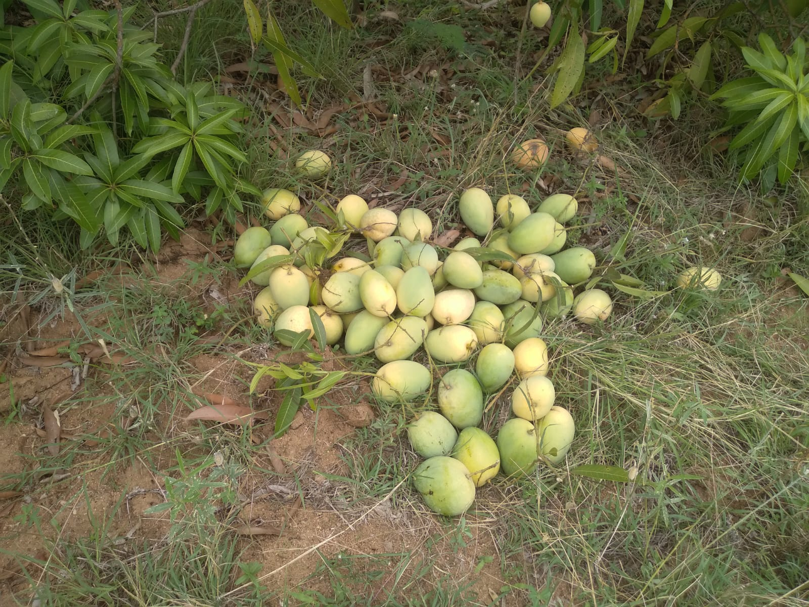
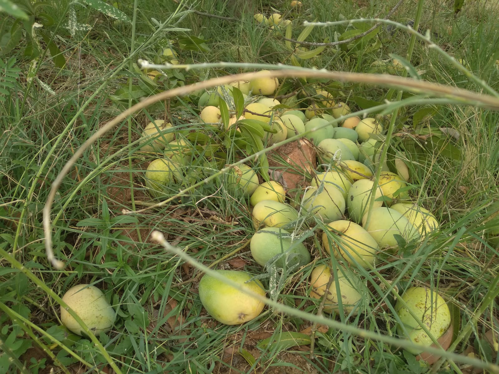
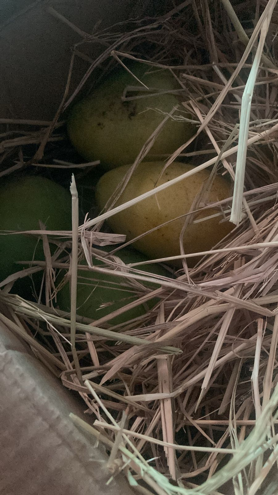

Coopious - Copious Cooperation
Table of Contents
1. Motivation
It is a modest effort but a revolutionary one to connect the consumers directly to the farmers and their produce. This model would dissolve permanently some of the inveterate problems facing a consumer: access to quality produce; and facing a farmer: a remunerative price. Also a myriad bunch of benefits would accrue both to the farmer and the consumer.
2. Varieties and Prices
| S.No. | Variety | Price / kg (Rs) | Weight of each box (kg) | Price of each box (Rs) |
|---|---|---|---|---|
| 1. | Banginapalle | 150 | 5 | 750 |
| 2. | Himayat | 300 | 5 | 1500 |
3. Place your order
4. Plan
We will be harvesting as the fruit is ripening on the tree in batches of one tonne in the next few weeks. Each box is packed with hay inside to allow for further ripening. The produce is totally organic. This farm never used chemical fertilizers. The land was fallow before we planted mango saplings.
5. Benefits of buying from Coopious
- The mangoes are harvested only after they reach the ripening stage on the tree ensuring a sweet taste that eludes many that are procured from retail outlets in the city.
- Organically grown and naturally ripened.
- To be able to connect directly to the farmer and influence the way farming is carried out. However radical the idea is, this could have profound implications in mitigating many of the bad practices in farming leading to healthy soil, nutritious and tasty produce and healthy consumers. On the whole a road towards sustainable farming could be paved.
6. Pictures


